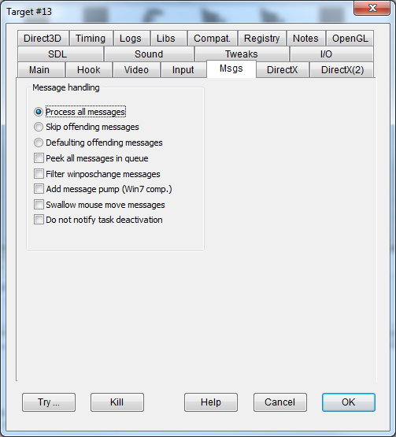

|
Process all messages |
MESSAGEPROC |
Most programs get X,Y mouse coordinates from the mouse messages or from the specific API. One tricky way to get the same info, though, is to listen to the Windows message queue using PeekMessage/GetMessage, and retrieve the X,Y coordinates from ANY received message in the pt field. Checking this box makes DxWnd fix the X,Y coordinates in this uncommon situation as well (see the game Uprising). |
|
Skip offending messages |
FILTERMESSAGES |
In theory, a fullscreen message should not expect several messages that are impossible to receive, such as border sizing, taskbar events, and so forth. Some programs are not properly coded to react to such "impossible" messages and may show malfunctions. This flag causes potentially harmful and meaningless messages to be suppressed. |
|
Defaulting offending messages |
DEFAULTMESSAGES |
While a well-designed windowed program should react to all window system messages, it is possible that a fullscreen program was designed without an appropriate reaction to such unexpected messages, like window stretching. This option makes DxWnd automatically process all these messages that an application might not correctly handle. It should be turned on if operations like window resizing or movement cause crashes or other problems. |
|
Peek all messages in queue |
PEEKALLMESSAGES |
In Windows 7 and newer, any windowed application MUST empty its message queue. The operating system considers any application that does not do this within a defined timeout period (about 5 seconds) to be malfunctioning, and kills the process (although it keeps displaying the window's contents). Programs developed before Windows 7 didn't take this constraint into account and may easily fail to get messages during processes such as unskippable cutscenes or long calculations. This option periodically empties the system queue, ensuring that the program won't be killed. However, there is a small chance that some events (like mouse clicks) could get lost occasionally and will need to be repeated. |
|
Filter winposchange messages |
NOWINPOSCHANGES |
Suppresses the WM_WINDOWPOSCHANGING or WM_WINDOWPOSCHANGED messages that some programs send to themselves to automatically move their window. This option is used for Rollercoaster Tycoon. |
|
Add message pump (Win7 comp.) |
PEEKALLMESSAGES |
Windows 7 and onward monitor each foreground process's input message queue and kill any processes that wait too long to flush their queue (generally five seconds). Some older games skip this task during long intro movies or AI processing, making them vulnerable to being killed by the OS. This flag activates a thread that periodically flushes pending messages from the queue, preventing these games from being automatically terminated. |
|
Swallow mouse move messages |
SWALLOWMOUSEMOVE |
Fixes "Akte Europa" blocked rendering while moving the mouse. |
|
Do not notify task deactivation |
UNNOTIFYINACTIVE |
A variation for the UNNOTIFY flag: suppresses task notification for window being deactivated only, while window activation is being notified. Useful in "Evil Islands: Curse of the Lost Souls" that performs surface recovery on reception of WM_NOTIFY message only, so it's better to notify the activation event. Beware: the flag is superseeded by the UNNOTIFY flag that suppresses WM_NOTIFY and WM_NCNOTIFY in all cases. |